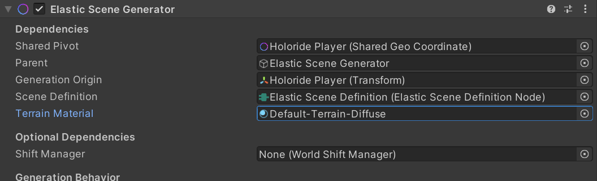
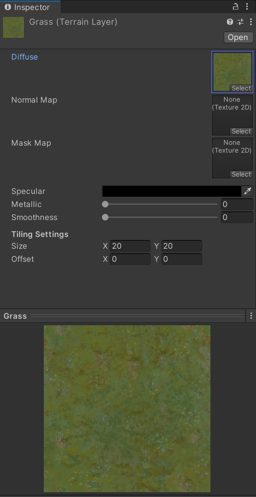
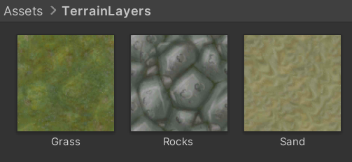
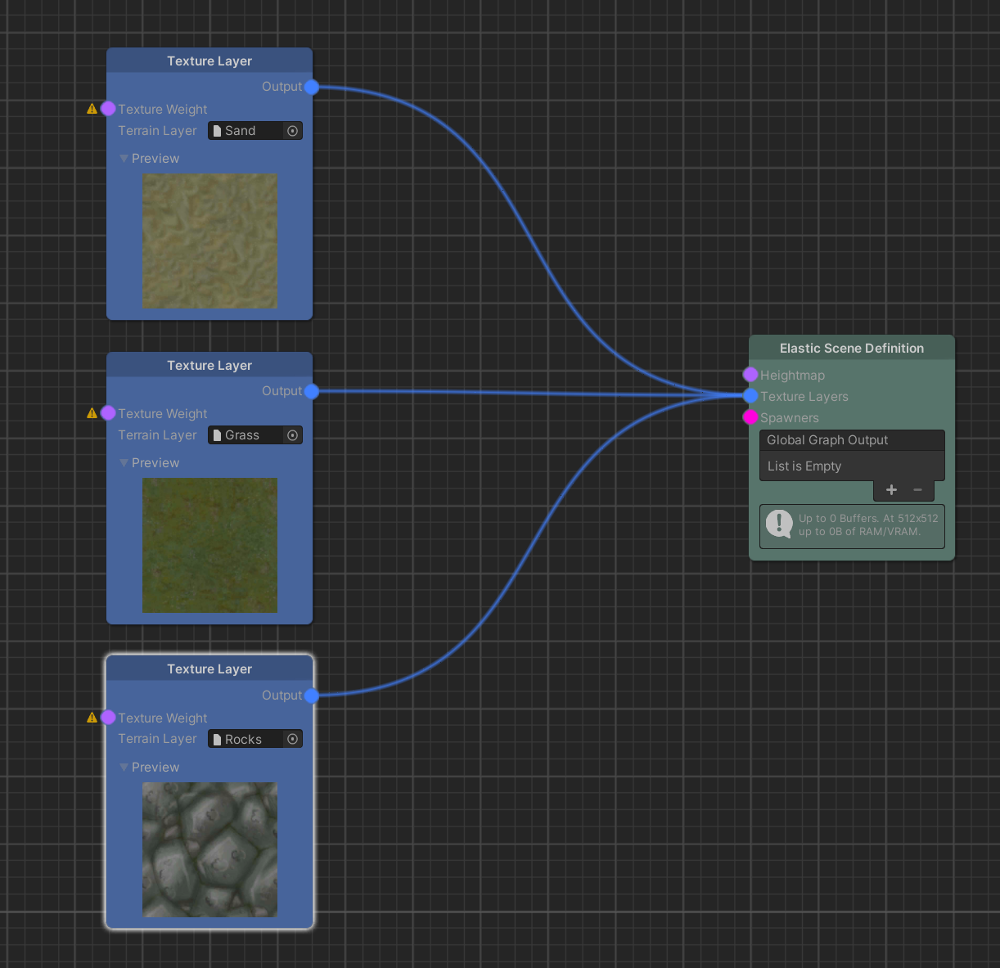
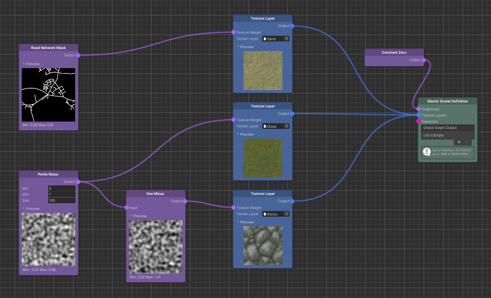
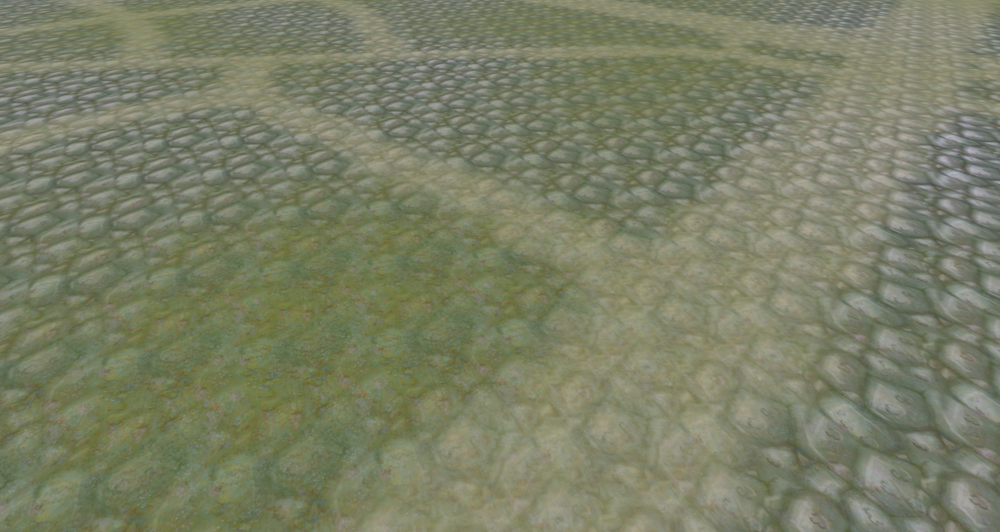
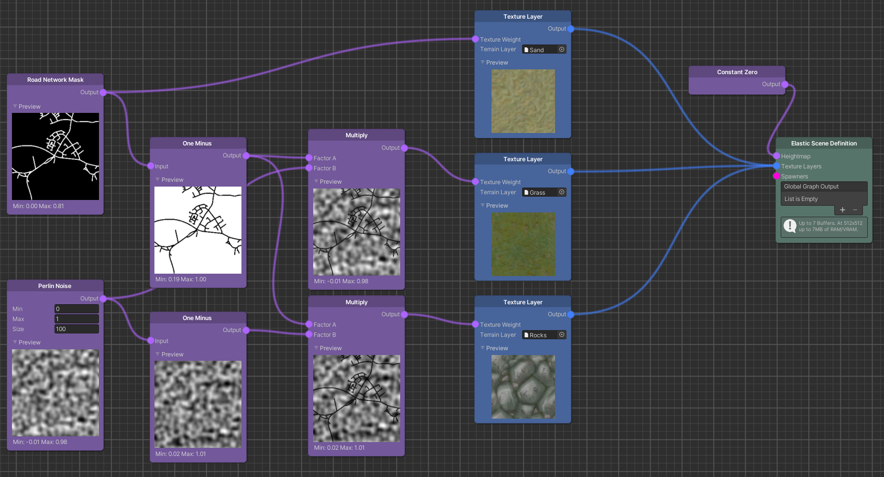
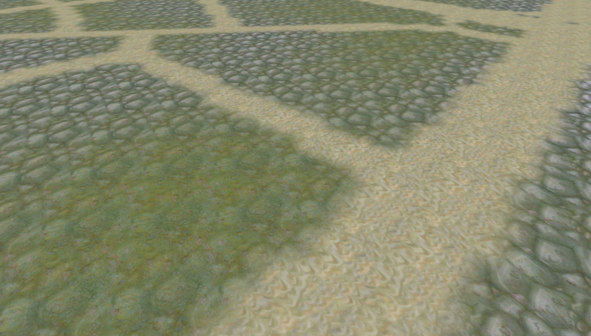
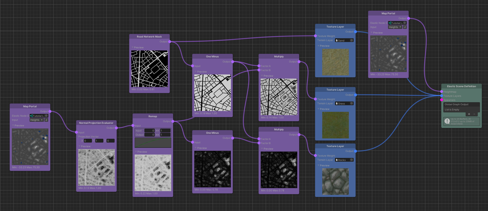
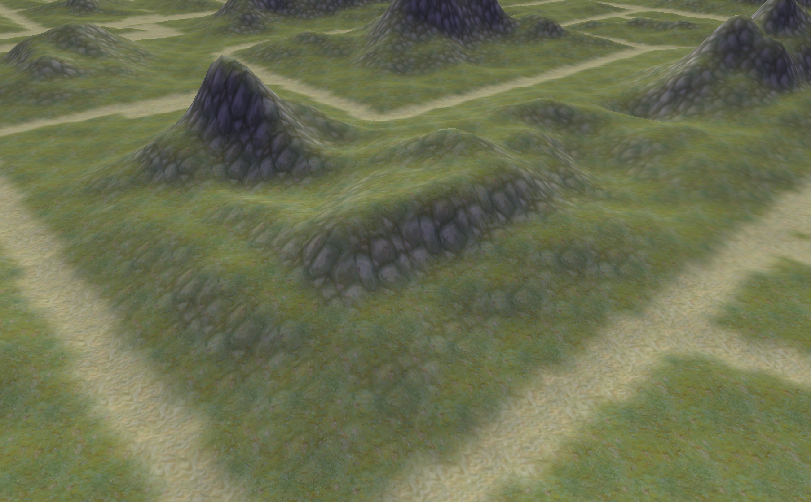

Masks & Texture Layers
In Unity, the terrain surface color is usually defined by multiple blended textures. For every place on the terrain, a weight Map defines which texture is dominant. We utilize the same Maps to define the texture weights as we do for heightmaps. Doing so requires four additional setup steps:
- The Elastic Scene Generator requires a reference to a material that supports Unity's Terrain Layer system.
- Unity's Terrain Layer assets have to be created and set up with texture files and material properties.
- In the Elastic Graph, Texture Layer nodes need to be added, linked to a Terrain Layer asset and connected to the Elastic Scene Definition node.
- Maps need to be defined to mask the weights of the terrain textures.
Terrain Material Setup
A material supported by the active render pipeline needs to be selected. Every official render pipeline comes with its own terrain shader. If your project uses the Standard Render Pipeline, the recommended asset is the pre-defined material called Default-Terrain-Diffuse.

If your project is set up with the Universal Render Pipeline, create a new material in your asset folder first and from its Inspector's drop-down menu choose the shader Universal Render Pipeline/Terrain/Lit. Link the respective material in the Terrain Material field on the Elastic Scene Generator component. Alternatively, any surface shader will work as a terrain material to achieve more individual looks. However, they rarely support terrain layers out-of-the-box and won't benefit from the techniques described in this tutorial.
Tip
Custom Terrain Layer support requires a deeper understanding of Unity's shader system since the naming conventions of the shader properties have to be followed. With some effort, they can even be used by shader graphs in combination with the Universal Render Pipeline. Unfortunately, we don't know of any official documentation and therefore refer to independent examples on code based Terrain Shaders and Terrain Layer enabled Shader Graphs.
Terrain Layer Setup
Create a new Terrain Layer asset by right-clicking your asset folder and choosing Create > Terrain Layer (mind that this is not a holoride asset). A minimal setup requires only a Diffuse texture to be linked.

To follow up on this tutorial, repeat the process twice with different textures.

Tip
Further Terrain Layer settings are described in the official documentation. Mind that setting a Normal Map and Mask Map might be costly on mobile VR headsets. For the sake of tuning the Terrain Layer properties, we recommend you to temporarily add a Unity terrain to the scene, add the Texture Layers and paint a sample terrain.
Texture Layer Nodes
In your Elastic Graph, add three Texture Layer nodes and connect their outputs to the Elastic Scene Definition (make sure it's the one referenced in your scene). For every Texture Layer choose a different Terrain Layer asset.

Tip
You should not connect more than four Texture Layers to avoid additional render passes.
Texture Masks (Respecting the Sum-of-1-Rule)
Let us add two simple Map Sources, a Perlin Noise and a Road Network Mask node and connect them to two of our Texture Layers. Texture Layers are more predictive if the map values are kept between 0 and 1. Therefore, we set the max value of the Perlin Noise node to 1. We add a One Minus node with the Perlin Noise node as input and connect its output to the third Texture Layer.

As the terrain is generated, you will notice how the Perlin Noise blends between two alternating textures. The One Minus node ensures that the sum of both masks is 1 at every position, which, as a rule-of-thumb, is the ideal state for predictive texture blending. At places where the noise map is close to the defined min and max values, only one texture is visible. That is, because here one masks measures up to 1 while the other approximates 0.

The weight of the road mask however is added to the other texture weights, producing a total value of 2 at all road pixels (which violates our sum-of-1-rule). As a result, the texture weights are normalized and the road texture has 50% impact while the other two textures share the other 50% determined by the noise. Our goal however is to carve the road into the noise weights and avoid them to shine through.
To fix this, we need to create the inverted Road Mask by plugging it into another One Minus node. Everything we multiply with this output will set the output at road pixels to 0.
We do so with both the noise and the inverted noise respectively and therefore retrieve the sum-of-1-rule at every position.


Tip
The written min and max values under every preview image help us to ensure all values stay between 0 and 1. Furthermore he sum-of-1-rule can be validated using Add nodes.
Slope Depending Textures
A particularly useful Node for terrain texture weights is the Normal Projection Evaluator. It makes the slope of the terrain accessible if we connect the same input as for the Heightmap port of the Elastic Scene Definition. With its default settings, the node's output is almost 1 at very steep cliffs and 0 where the surface is level. Therefore, the masks it generates are not only in the desired 0 to 1 range, they also contribute to a particularly authentic terrain look. The slope has impact on numerous physical phenomenons of real world terrains such as landslip, gravity, erosion, exposure to sunlight and plant cover. By remapping the node's output, the influence of the slope can be further refined.
In this example, we replace the noise texture by the remapped Normal Projection Evaluator.

